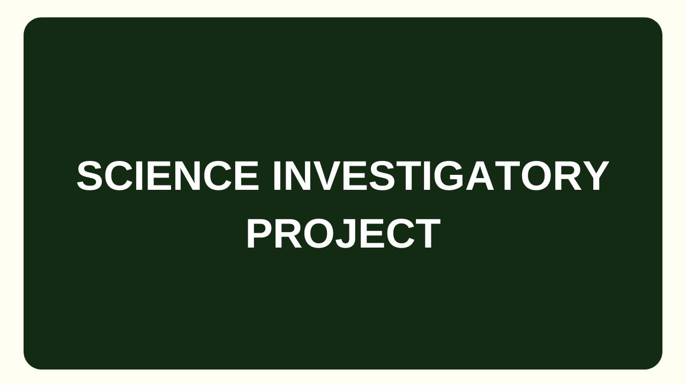
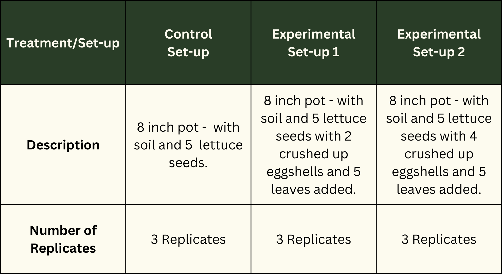
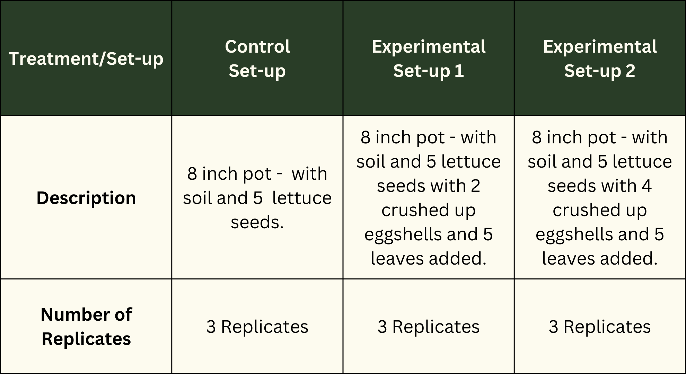

"Be Aware. Be Clean"
MADRASAH INSTITUTION
Bibliography
Documentation
Gathering your pots
Planting the seeds in the pots
Labeling each set-up

Crushing the eggshells
Preparing the compost

-Project Title-
The value of composting to the community is that composting significantly reduces the amount of trash in a landfill as well as the costs and carbon emissions associated with hauling and processing those materials. Meanwhile, the valuable nutrients in your compostable materials make composting a better option than landfilling your organic waste. And lastly, the value of composting to the environment is that composting conserves water by assisting the soil in retaining moisture and reducing water loss. It helps the environment by assisting the soil in retaining moisture and reducing water loss. It helps the environment by recycling organic materials and saving landfill space. Composts differ in their properties and suitability for various applications. This shows that composting has a lot of benefits that can help communities and the environment. It can help in conserving our environment and lessening our waste contribution in our community.
Our composting project can assist our partner institution in growing the
necessary plants to support the children’s healthy growth. In terms of what the
students eat, our composting project will benefit Madrasah; they may plant
nutritious veggies, and our composting initiative will help the plants develop healthily.
-Background and Significance of the Study-
-Problem Statement-
-Hypothesis Statement-
 
